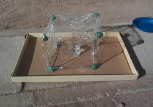
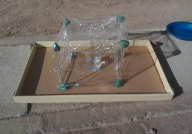

Prática 3: EFEITO ESTUFA
Materiais Necessarios:
Palitos de churrasco;
Massinha;
Dois copos;
Água;
Dois termômetros;
Filme de PVC (aquele de cozinha).
Procedimentos:
1. Com os palitos de churrasco e a massinha faça dois cubos
2. Cubra um cubo com filme de PVC e deixe o outro sem cobertura. Agora você terá que ir para um lugar que tenha sol. Coloque os dois cubos no chão. Dentro de cada um, coloque um copo com um pouco de água e um termômetro. Registre a temperatura inicial da água. No nosso caso, 35,1º. Deixe os dois cubos no sol por mais ou menos 45 minutos. É suficiente.
 


3. No cubo que ficou aberto verificou-se uma temperatura de 36,2º. No cubo que ficou fechado, foi registrado 37,8º.